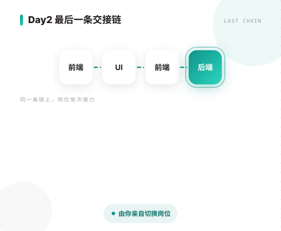
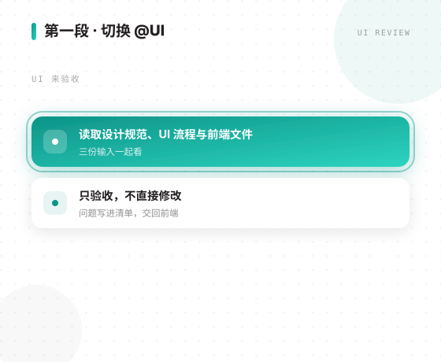
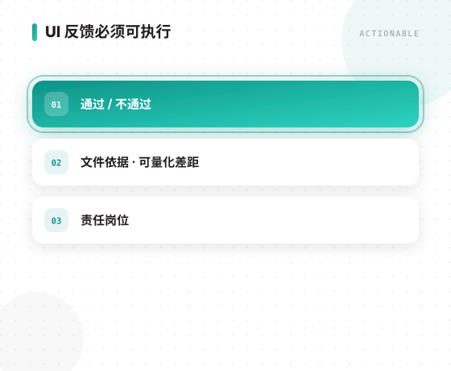
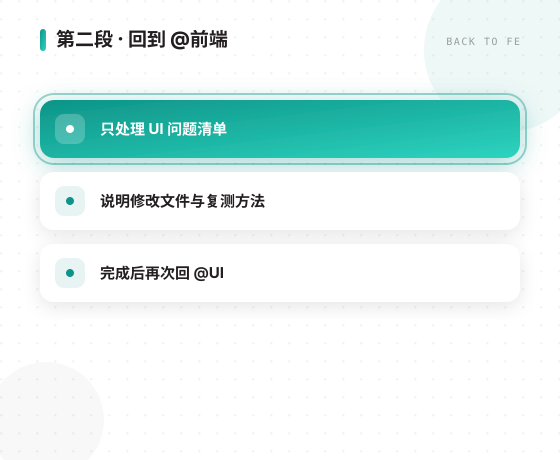
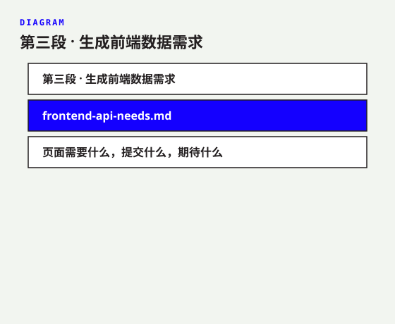
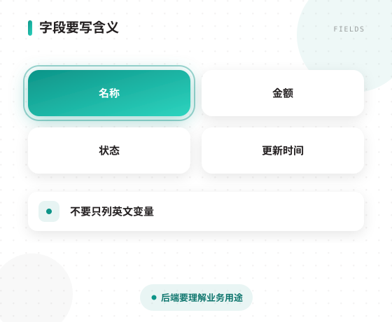
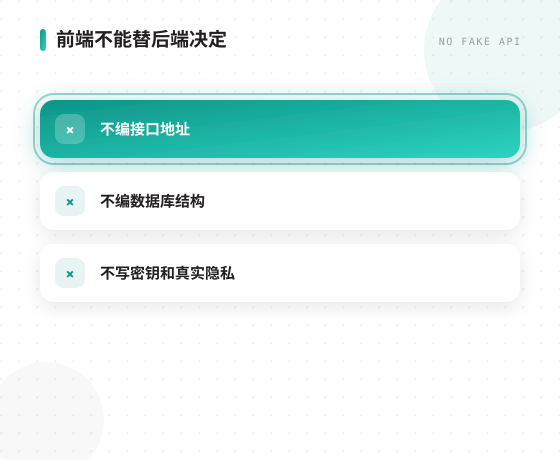
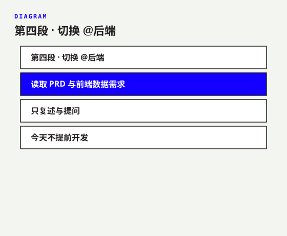
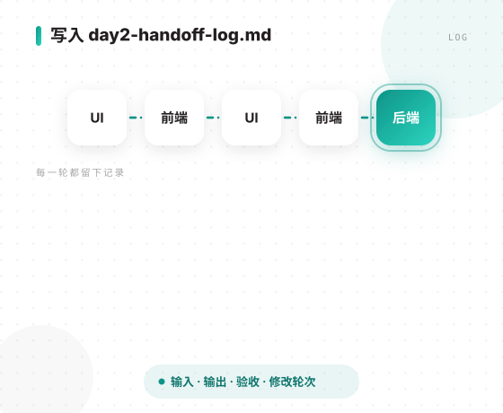
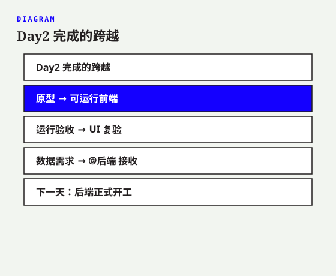

前端 → UI → 前端 → 后端
由你亲自切换岗位

读取设计规范、UI 流程与前端文件
只验收，不直接修改

通过/不通过
文件依据 · 可量化差距
责任岗位

只处理 UI 问题清单
说明修改文件与复测方法
完成后再次回 @UI

frontend-api-needs.md
页面需要什么，提交什么，期待什么

名称 · 金额 · 状态 · 更新时间
不要只列英文变量
后端要理解业务用途

不编接口地址
不编数据库结构
不写密钥和真实隐私

读取 PRD 与前端数据需求
只复述与提问
今天不提前开发

UI → 前端 → UI → 前端 → 后端
输出 · 验收 · 修改轮次

原型 → 可运行前端
运行验收 → UI 复验
数据需求 → @后端 接收
后端正式开工
